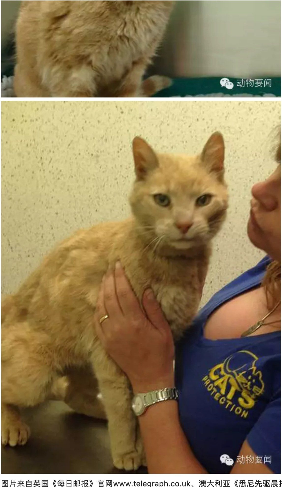
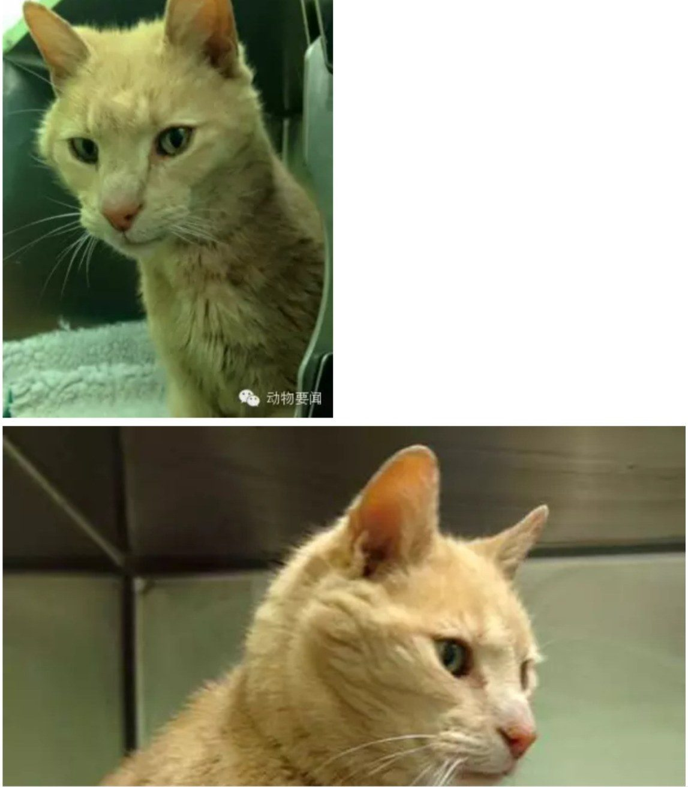

澳大利亚到北爱尔兰 25岁老猫的神秘流浪旅程
这只大黄猫最近在北爱尔兰被猫咪救助组织发现。不可思议的是，它随身带着一个小小芯片，上面有主人登记的信息：它出生于柏林墙倒塌的那一年——1989年，今年马上26岁了！
它叫TIGGER，登记地点在澳大利亚。芯片里还有一条2004年的记录：它在伦敦的一家动物诊所被当作流浪猫登记过。
可是，它是怎么从澳大利亚到伦敦、再到北爱尔兰的呢？看起来它已经自己流浪好多年了诶！猫咪的平均寿命是15岁，它今年25岁，折合人类寿命120多岁了。
现在志愿者们给它起了新名字OZZIE，也在FACEBOOK上发起了寻找主人的活动。


编译自《每日邮报》、《悉尼先驱晨报》